Züchtertafel
Die Züchtertafel visualisiert Züchter, die eine vom DMC e.V. abgenommen Zuchtstätte haben und unter Einhaltung unserer Vereinsordnungen als Züchter tätig sind. Viel Spaß beim Kennenlernen unserer Zuchtstätten.
24 Zuchtstätten
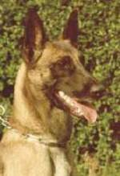
Airport Hannover (Website des Zwingers, öffnet in neuem Tab)
Züchter Anke Höpken
FCI Zwingerschutz seit 1993
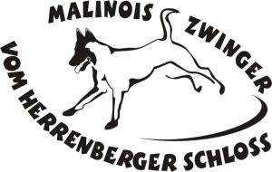
vom Herrenberger Schloss (Website des Zwingers, öffnet in neuem Tab)
Züchter Sonja Heintschel
FCI Zwingerschutz seit 2002
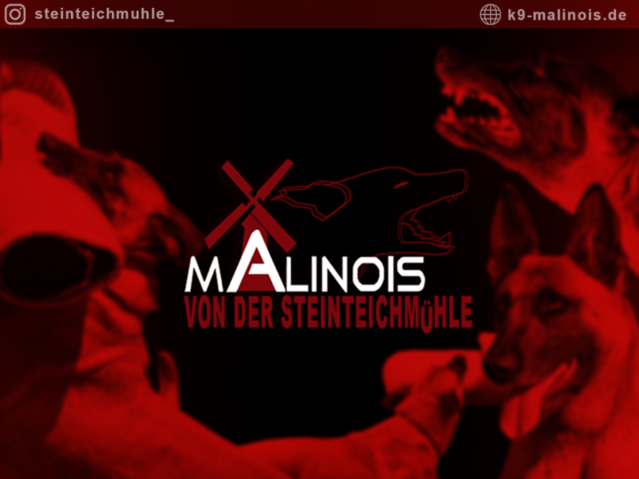
von der Steinteichmühle (Website des Zwingers, öffnet in neuem Tab)
Züchter Patricia Schönfeld
FCI Zwingerschutz seit 2002
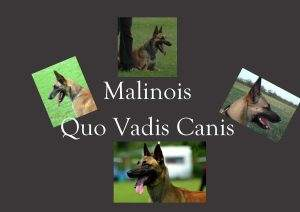
Quo Vadis Canis (Website des Zwingers, öffnet in neuem Tab)
Züchter Magdalena Waldmann
FCI Zwingerschutz seit 2004
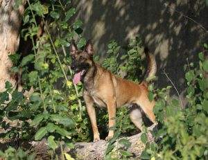
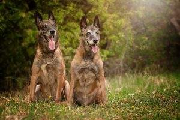
vom Wehebach (Website des Zwingers, öffnet in neuem Tab)
Züchter Ute und Frank Steffens
FCI Zwingerschutz seit 2005
von Malihattan (Website des Zwingers, öffnet in neuem Tab)
Züchter Nina & Vincent Helbing
Nationaler Zwingerschutz seit 2012
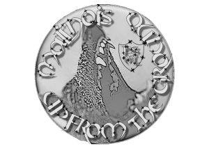
UP FROM THE GROUND (Website des Zwingers, öffnet in neuem Tab)
Züchter Marianne Liebelt & Peter Stöckle
FCI Zwingerschutz seit 2013
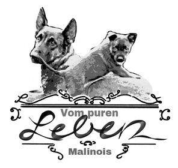
vom puren Leben (Website des Zwingers, öffnet in neuem Tab)
Züchter Romy Meyer
FCI Zwingerschutz seit 2014
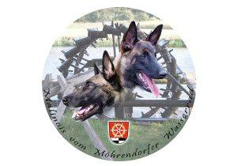
vom Möhrendorfer Wasserrad (Website des Zwingers, öffnet in neuem Tab)
Züchter Jürgen Meier, Michaela Meier-Hum
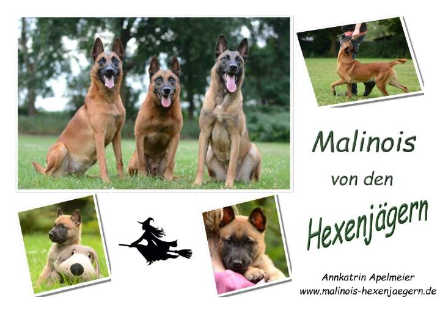
von den Hexenjägern (Website des Zwingers, öffnet in neuem Tab)
Züchter Annkatrin Apelmeier
FCI Zwingerschutz seit 2015
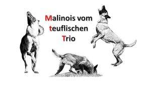
vom Teuflischen Trio (Website des Zwingers, öffnet in neuem Tab)
Züchter Jasmin Wünderich
FCI Zwingerschutz seit 2016
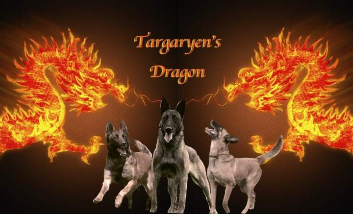
Targaryen’s Dragon (Website des Zwingers, öffnet in neuem Tab)
Züchter Silke Bröscher
FCI Zwingerschutz seit 2017
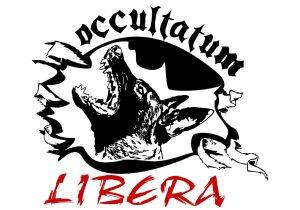
Occultatum Libera (Website des Zwingers, öffnet in neuem Tab)
Züchter Bianca Schneider
FCI Zwingerschutz seit 2017
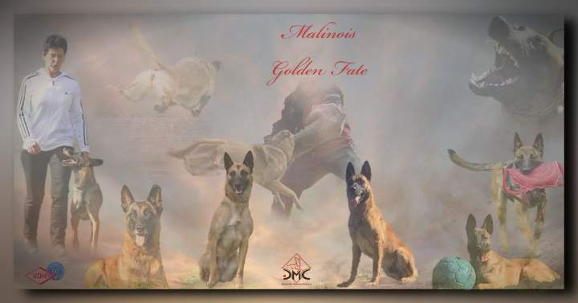
Golden Fate (Website des Zwingers, öffnet in neuem Tab)
Züchter Manuela Bresch
FCI Zwingerschutz seit 2018
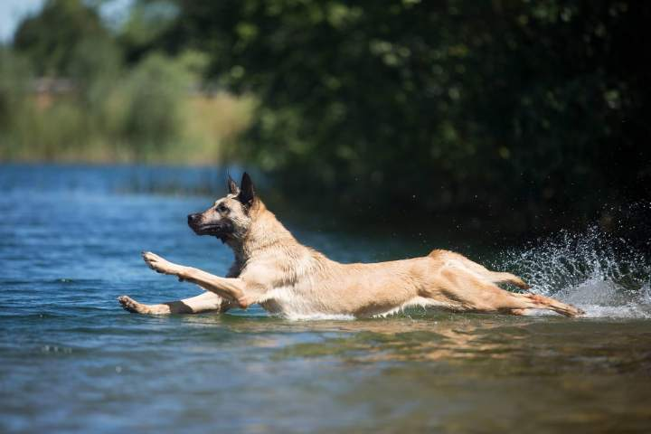
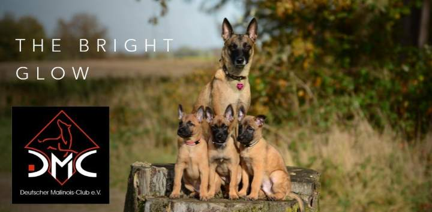
The bright glow (Website des Zwingers, öffnet in neuem Tab)
Züchter Justine Thomaschek
FCI Zwingerschutz seit 2021
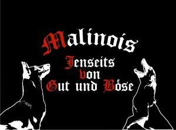
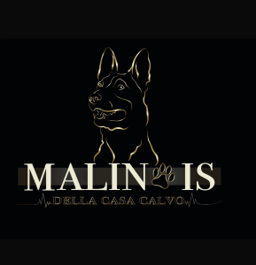
Della Casa Calvo (Website des Zwingers, öffnet in neuem Tab)
Züchter Patricia Calvo
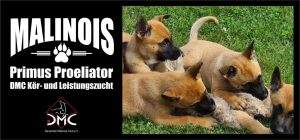
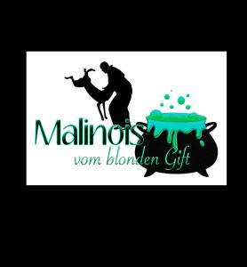
Vom blonden Gift (Website des Zwingers, öffnet in neuem Tab)
Züchterin Sandra Sommer
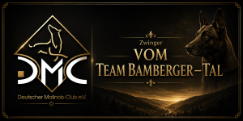
Vom Team Bamberger-Tal (Website des Zwingers, öffnet in neuem Tab)
Züchter Benjamin Klöck
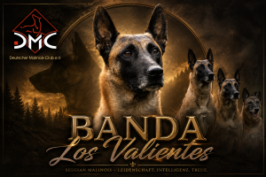
Banda Los Valientes
Züchter Stefan Müller